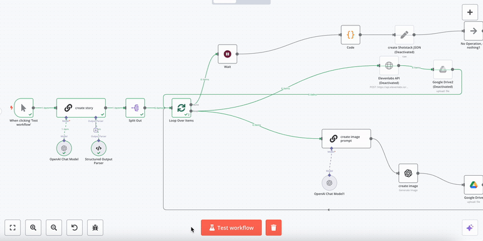

n8n
n8n es una herramienta de automatización de flujos de trabajo (workflow automation) basada en nodos, de código abierto y altamente personalizable. Permite conectar diferentes servicios, APIs y procesos de manera visual e intuitiva, ideal para integrar tareas complejas sin necesidad de escribir mucho código.

Figura 1: Ejemplo Interfaz gráfica de n8n
Características principales
- ⚙️ Basado en nodos: cada paso del flujo es un nodo que realiza una tarea (leer un archivo, hacer una petición HTTP, analizar texto, etc.).
- 🔁 Automatización condicional: permite bifurcar flujos según condiciones lógicas, errores, o datos.
- 🌐 Integración con cientos de servicios: Google Drive, APIs REST, bases de datos, herramientas de IA, entre otros.
- 🤖 Extensible con código: se pueden usar códigos JavaScript o Python personalizados.
- 💾 Self-hosted o en la nube: puede desplegarse localmente, en servidores propios, o usar su versión cloud.
¿Cómo se usa?
1. Crear un nuevo flujo
Los flujos en n8n comienzan desde un nodo gatillo (trigger), como por ejemplo:
- Un archivo subido a Google Drive
- Una petición entrante por HTTP
- Un webhook desde una aplicación externa
- mediante otro workflow
2. Encadenar nodos
Luego del nodo de inicio, se encadenan nodos de procesamiento:
- Transformaciones con nodos como
Set,Function,Merge - Interacciones externas como
HTTP Request,Google Sheets,Email - Análisis de datos, consultas a bases, o comunicación con APIs de IA
Aplicación en este proyecto
En el contexto del presente proyecto, n8n se utiliza como motor de orquestación para automatizar tareas como:
- 🔄 Esperar la notificación de petición de procesamiento de papers
- 📊 Ejecución GROBID para análisis del paper
- 📈 Generación de resúmenes o procesamiento necesario
- 📤 Indexación de información en la base de datos vectorial (Qdrant)
- 🧠 Interacción con modelos de lenguaje (LLMs)
- 📁 Interacción con el usuario final
Ventajas de usar n8n en el proyecto
| Ventaja | Descripción |
|---|---|
| Ejecución Local | Permite el control total sin necesidad de pagos mensuales a aplicaciones externas. |
| Automatización sin código | Reduce la necesidad de scripting manual. |
| Reutilización de flujos | Se pueden guardar y clonar flujos. |
| Integración rápida | Conexiones simples con múltiples servicios. |
| Observabilidad | Logs visuales y control sobre cada nodo. |
| Control de errores | Permite manejar errores de forma precisa. |
Instalación
Para utilizar n8n existen distintas alternativas. La más sencilla sería usarlo directamente en la nube (n8n cloud); sin embargo, no optaremos por esta opción debido a las limitaciones que presenta, especialmente en cuanto al manejo de tokens con modelos de IA y otras integraciones. Nuestro objetivo es instalar n8n de manera local, lo que ofrece mayor control y escalabilidad. Actualmente, existen dos métodos principales para hacerlo (solo la instalación de n8n, pero luego se explica una tercer forma que implica un Self-hosted AI starter kit que incluye unas caracteristicas adicionales):
1. Instalación global mediante npm
No utilizaremos esta opción, ya que, pensando en una solución escalable y mantenible, preferimos una alternativa más robusta.
2. Instalación mediante Docker
Esta es la opción que elegiremos por sus múltiples ventajas:
- Proporciona un entorno limpio para la instalación.
- Facilita la configuración de la base de datos preferida.
- Evita problemas de compatibilidad entre diferentes sistemas operativos, ya que Docker ofrece un entorno consistente.
- Simplifica la migración a nuevos servidores o entornos.
3. Instalación Self-hosted AI starter kit
¿Qué es el Self-hosted AI Starter Kit?
El Self-hosted AI Starter Kit es una solución de código abierto (proporcionada por n8n) diseñada para facilitar la implementación de infraestructuras de inteligencia artificial de manera local, sin depender de servicios en la nube.
Proporciona un entorno preconfigurado que integra múltiples componentes clave, como:
- Bases de datos (PostgreSQL, Redis, etc.)
- Almacenamiento vectorial
- Servidores de modelos de lenguaje (LLMs)
- Interfaces web de administración
Todo el sistema se despliega mediante contenedores Docker, lo que garantiza portabilidad, consistencia y facilidad de mantenimiento.
El kit está pensado para ser modular y escalable, adaptándose tanto a proyectos personales como a entornos productivos de mayor escala.
se eligió utilizar el Self-hosted AI Starter Kit debido a varias razones fundamentales:
- Control total sobre los datos y la infraestructura.
- Evitar limitaciones de plataformas en la nube, como restricciones de tokens, memoria o tiempo de ejecución.
- Mayor privacidad y seguridad de la información procesada.
- Facilidad de integración con otras herramientas y sistemas propios.
- Escalabilidad, permitiendo crecer en recursos y capacidades a medida que el proyecto lo requiera.
Además, el enfoque basado en Docker permite que toda la infraestructura pueda ser levantada, replicada o migrada fácilmente entre distintos entornos.
Conclusión
n8n es una herramienta poderosa y versátil que facilita la integración de servicios y la creación de automatismos sin requerir gran experiencia en programación. En este proyecto, permite centralizar todas las tareas repetitivas relacionadas con el análisis, resumen e indexación de papers científicos, funcionando como columna vertebral de la arquitectura de RAG implementada.
Referencia
Si estás más interesado conocer más sobre n8n.